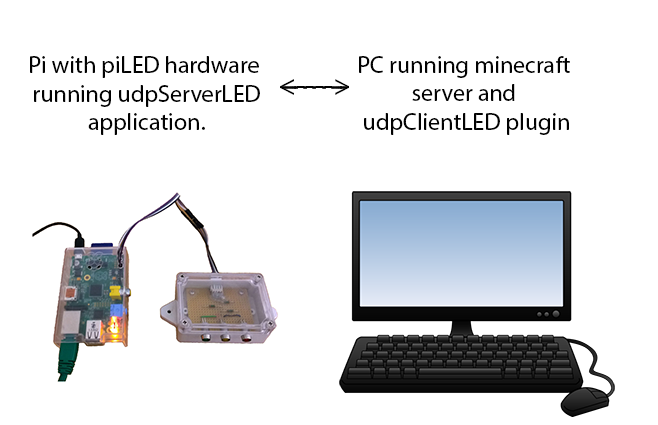

A RaspberryPi based LED notification for minecraft servers (Java).
This programme works in conjunction with udpServerLED.
It is based on the original piLED plugin and runs identical hardware.
udpClientLED/udpServerLED is a traffic light based minecraft server notification system using a RaspberryPi. You will need a RaspberryPi which is connected to the physical hardware described in this guide in addition to an external minecraft server. If you are running the minecraft server on the same RaspberryPi then you need the original standalone piLED plugin form the link on the left.
System overview of both parts.
udpServerLED is a standalone java application that runs on a RaspberryPi. udpClientLED runs as a standard Minecraft plugin on your Minecraft server.
The rest of this guide refers to the client side running on the PC which is running the Minecraft server.
If you are not interested in playing with the code then just download the latest .jar file from the releases link. After downloading, copy it to your minecraft server plugins folder and follow the hardware guide for the raspberryPi part on the udpServerLED link.
Upon first run the plugin will write a config.yml to its subdirectory in your plugins folder. You will need to change the IP address to the one used by your RaspberryPi. This can be done in one of 2 ways.
updateUDPConfig
setUDPIPAddress [IPAdress]
If you want to play with the source code then download the whole project from the links on the left. It was built in Eclipse using the Maven framework.
The plugin has 3 parameters that can all be controlled by the either editing the config.yml file or console commands as described below.
It should be noted that restarting the server after manually editing config.yml will have broadly the same effect except that in the case of an error it will revert to the defaults not the last known good value. For this reason it is recommended to either use the console commands to change parameters or use updateUDPConfig if manually editing.
I wrote this, it's my first proper code for well over twenty years (Excel macros notwithstanding) and probably the same for electronics that wasn't work related. Any sugestions for improvements to the code are welcome, contact me on GitHub. It's been fun perhaps with the exception of my woeful attempts to understand Git merges!